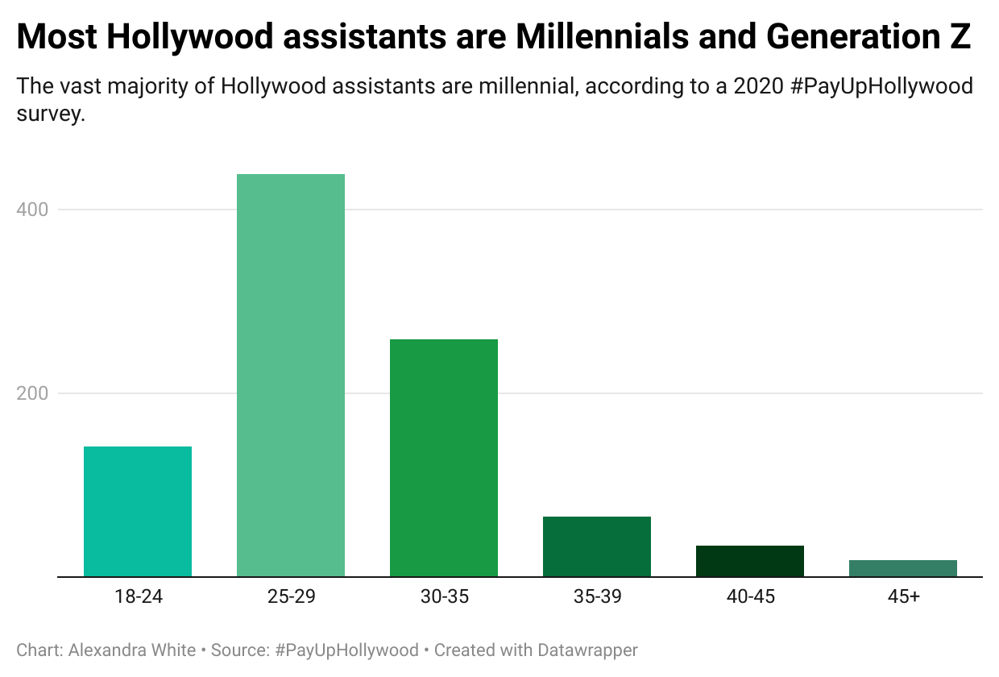
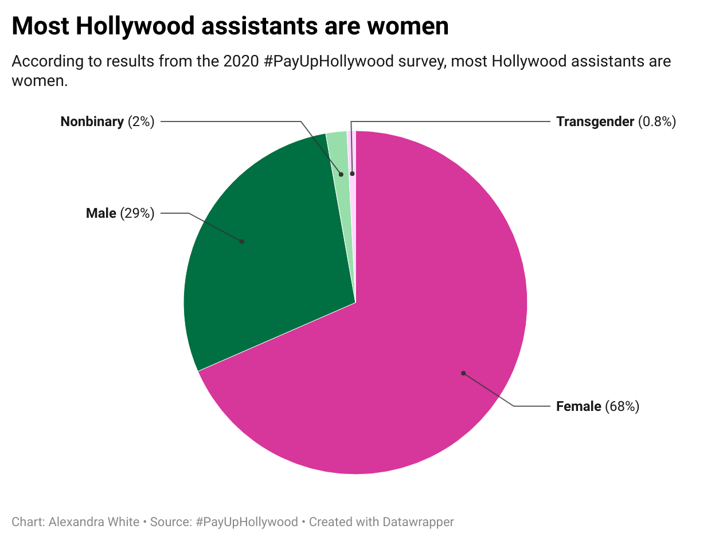
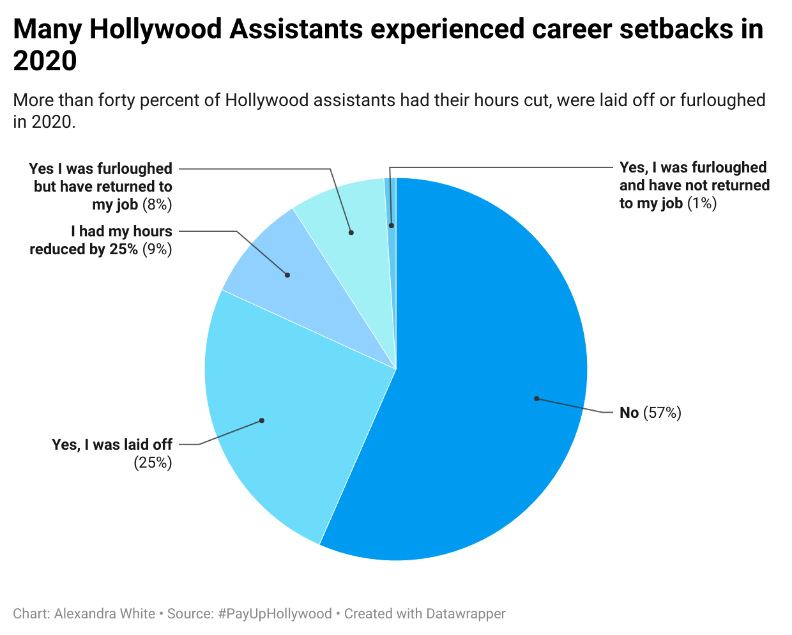

Hollywood sign
Photo by: Wikipedia
When I worked as an assistant at a talent agency four years ago, there were always rumors swirling around the office. Most of the rumors were about whom the agents were dating, which celebrity would become a client or which assistant was the latest to be fired. My favorite rumor, a few years old, was more of talent agency folklore.
There once was an assistant who finally had enough. She worked for a big-time TV agent, and she did her job dutifully. In fact, many of the other assistants who sat near her were allegedly shocked by how little her boss yelled at her. But the days were long, and the constant flow of emails and phone calls was exhausting. One day this assistant’s boss finally snapped when she booked lunch at the Palm, a steakhouse nestled in the heart of Beverly Hills that catered to a washed-up celebrity crowd, instead of the fancy and exclusive Fred's, a restaurant that sat on the top floor of Barneys in Beverly Hills. As her boss continued to yell at her, she tried to fix the situation. She called other assistants to ask if anyone had a reservation at Fred’s that she could use; she even begged the restaurant to take her boss and his client. But nothing worked. The TV agent furiously stormed out and walked over to the Palm. When he returned, his assistant wasn’t sitting at her desk. Ten minutes later he called her cellphone, but it went straight to voicemail. By 4 p.m., it was clear what had happened: instead of crying at her desk and mulling how she could avoid this mistake in the future, she got up from her desk and never came back.
Four years later, I would do the same. I didn’t quit abruptly like this assistant. It took time, but I was sick of fetching pour-over coffee three times a day, being yelled at for small errors and playing career chess at a production company that never promotes assistants. I had been making $37,000 a year or less for the last four years, and my student loans did not seem to be decreasing. At the time, I assisted three film producers, which was easier than my previous job as an assistant to a television agent. But I wanted to be promoted and earn more money, and I wasn’t going to wait for Hollywood.
Assistants are the backbone of Hollywood. They work for agents, producers, writers, writers’ rooms, productions, directors, editors, hair and makeup departments, and even costume departments. Everyone has an assistant, and most writers, producers, agents and directors have been assistants. But assistant jobs are not available to the masses. You cannot apply for these kinds of jobs; you must know someone. Still, the network is large, and someone always knows someone who can offer young Hollywood hopefuls a chance to prove themselves and climb one step higher toward their big break.
That big break can be elusive, which is why some assistants endure abusive treatment just to get a foot in the door. Assistants of the Hollywood and Broadway producer Scott Rudin said in a Varity expose that their mental health had been permanently damaged after enduring constant screaming and daily threats that they would be fired. A former assistant even told Variety that Rudin shattered a computer monitor on another assistant’s hand. Even though Rudin constantly fired assistants, he could easily find new ones. They all wanted a chance to prove themselves so that they could get closer to their big break.
Industry leaders tell assistants that they will endure abusive treatment only temporarily. Eventually they will be promoted and have their own assistants to torture.
But change seemed to be coming for the overworked and underpaid Hollywood assistant. A few days after I decided to quit, a survey for #PayUpHollywood, an organization that advocates for higher wages for Hollywood assistants, popped up in my inbox. Founded in 2019 by Deirdre Mangan and Liz Alper, TV writers who used to work as assistants, the organization began as a social media campaign. I filled out the survey anyway, detailing my low salary and anecdotally reporting the poor treatment I’d endured over the years. I was still planning to quit but felt optimistic that change was coming to the industry.
The #PayUpHollywood survey results seemed to confirm what I already knew. According to the 2020 survey, almost 80% of respondents reported making $50,000 a year or less as assistants. Thirty five percent reported making less than $30,000. California’s minimum wage for a full-time job was $27,040 a year. The average rent for an apartment in Los Angeles is $2,518 a month, according to Rent Cafe.
The low pay, long hours and rigid workplace environment for Hollywood assistants also affect workers in many other industries. This year American workers have decided they are fed up with their jobs, and a record number are quitting in what is being called the Great Resignation. In August, a record 4.3 million Americans quit their jobs, —the most since the Bureau of Labor Statistics started keeping track in 2000. The International Alliance of Theatrical Stage Employees (IATSE), a labor union that represents film and television production workers, threatened to strike this summer unless studios and networks agreed to provide its members with higher pay, longer breaks, workplace flexibility, better healthcare and pension benefits, which the studios and networks ultimately accepted.
The bubbling labor movement in and outside Hollywood could be the right time for assistants to ride the momentum and change their predicament. Although assistants don’t have a union, I wondered if these young workers would take advantage of this moment and organize their way towards a union, or at least unite to demand higher pay and better treatment. If not, many must have decided to quit like me.
Hollywood is no stranger to organized labor. Almost everyone in Hollywood belongs to a guild or union like the Directors Guild of America, Producers Guild of America, Screen Actors Guild, Writers Guild of America or IATSE.
The Producers, Screen Actors and Writers Guild were all founded in the mid 20th century. Many of these unions and trade associations offer their members benefits including health insurance, pensions and seminars. The Directors Guild, Screen Actors Guild, IATSE and Writers Guild protect and advocate for higher wages and improved working conditions.
The Writers Guild has gone on strike in 1960, 1981, 1988 and 2007-08. The 2007 strike, which lasted for 14 weeks, was national news and even then presidential candidate Barack Obama weighed in proclaiming that he stood with the writers from his campaign headquarters in Chicago.
The oldest union in Hollywood belongs to the people who work behind the scenes, or “below-the-line.” IATSE was founded in 1893 in New York City when 17 stagehands met on the corner of Broadway and 27th Street to band together and fight poor working conditions, long hours, low pay and job insecurity.
The movement began to spread to stage carpenters, property personnel, electricians and stagehands across the United States and Canada. They came together to form IATSE, which today represents over 150,000 workers primarily in film and television, but also in theater, trade shows and exhibitions, and concerts.
Writers’ assistants are the only Hollywood assistants who are unionized. They joined IATSE in 2018.
The Writers Guild of America West (WGAW) does not allow aspiring writers or writer’s assistants to join. They need 24 writing credits to apply. Even if a writer’s assistant has written a script for a 60-minute show and receives a credit, it counts as only one-third of the 24. The assistant would need to receive a writing credit for three episodes to become a member, which is why those assistants had to become members of IATSE rather than WGAW.
WGAW supports better working conditions in Hollywood for assistants but said it can advocate only for its members. I asked Tery Lopez, WGAW’s director of equity and inclusion, if her division advocated for more diversity and inclusion for showrunners’ assistants, since many become writers. “We as staff cannot work in an area that is not guild-covered,” said Lopez.
WGAW does not track data on how many assistants become guild members, but Lopez assured me that assistants can succeed in the industry. “We are seeing that after we’ve worked with somebody who is an assistant, now they’re becoming guild members,” said Lopez. “It's really great to see that, especially when they're coming from underrepresented backgrounds.”
Writers’ assistants are still in the upper echelon of the Hollywood assistants. Theirs is a coveted job that many aspiring writers dream about. There are four types of assistants for writers: writers’ assistant, showrunner’s assistant, assistant to a writer (who typically supports an individual feature film writer) and writers’ room production assistant.
Being a writers’ assistant is a prestigious job; these assistants support a TV writers’ room by taking notes and sometimes writing scripts. Some have their own manager or agent. The other assistants typically do not get a chance to write anything for a feature or television show and do not have representation.
There is no support system for most assistants in Hollywood; no union that will strike on their behalf. The only thing assistants have is the belief that eventually they will be promoted. They hope to one day walk onto the stage and claim an Emmy or Oscar. All their hard work will finally pay off, and they’ll be recognized as creative geniuses.
It is a classic Horatio Alger story, a capitalism origin story: if you work hard enough, eventually you will succeed, and riches will follow. But a capitalist system has winners and losers. Not everyone succeeds and becomes a wealthy capitalist; some people fail. Ruth Milkman, a labor scholar who is a Distinguished Professor at the City University of New York Graduate Center, said capitalism inherently breeds inequality. “The job of a capitalist is to make as much money as possible by extracting as much labor as possible for the least cost from whoever they employ,” she said. “If that capitalist is successful, then the inequalities continue to widen.”
Milkman is an academic who has identified as a socialist feminist since the late 1970s, long before it was in vogue on TikTok. She says she is optimistic that the system could change because of my generation. “I don’t know how old you are, but I’m guessing you’re a millennial, and your generation is different,” she said. “Now there really is a large number of people who are critical of capitalism.”
Milkman is right. My generation and Gen Z supported Bernie Sanders in the 2020 Democratic presidential primary over President Biden or even Elizabeth Warren. According to a 2020 #PayUpHollywood survey, almost 70% of assistants are women—many of them millennial and Gen Z women who know the impact of the #MeToo movement. These two generations tend to be more critical of capitalism and favor labor organizing.
 Mara Woods-Robinson, a showrunner’s assistant who identifies as a leftist, said #PayUpHollywood sparked needed conversations. “It starts with a living wage because how you are valuing someone’s labor is how you are compensating them for it,” Woods-Robinson told me in a hushed tone as she talked to me outside her boss’s office. She quickly looked over her shoulder to make sure no one was behind her.
She makes only $39,000 a year, which she admits is hard to live on comfortably in Los Angeles. The mission of the #PayUpHollywood movement is to advocate for a higher wage, so I asked if she was willing to fight for change. She enthusiastically agreed that she was ready to fight but then explained she did not want to lead the movement.
Woods-Robinson was unemployed for over a year after being laid off from her previous job as a showrunner’s assistant in 2018. She said she’s not willing to risk long-term unemployment again.
“I wouldn’t walk out of my job in protest unless there’s a huge support for doing that,” she said. “We’re all kind of vulnerable. I still need my job.”
Not all assistants were afraid to organize during the pandemic. Ellen Cho, who worked as a producer’s assistant during the pandemic, said she was inspired by the #PayUpHollywood movement in 2020 and coordinated with other assistants to ask for a higher wage from the producers at their production company. Cho, who spoke on condition that her name be changed because she had signed a non-disclosure agreement, said assistants at her company made only $55,000 a year, whereas assistants at other high-end production companies made $70,000 to $80,000. Galvanized by the social media movement, Cho sent her boss an email in solidarity with the other assistants, asking for a raise of $5,000 to $10,000.
Cho’s boss was livid. “She was swearing at me and saying that I’m a fucking moron for doing this before bonus season,” said Cho, her eyes welling up with tears. “None of the assistants got bonuses that year.”
Her boss began to criticize every little mistake she made and even complained to human resources. She realized she would never be promoted at the company, so she started looking for another job.
#PayUpHollywood inspired Cho to ask for a higher wage, but she was not prepared for her job to be threatened. The organization is not a mentorship organization that helps assistants figure out how to be promoted or fights workplace harassment and abuse; it only advocates for higher pay without assistants in the room.
Liz Alper, one of the organization’s founders, was optimistic that assistants who work hard enough will be promoted. “The belief behind it is that the stars are going to align for you,” she said. “It’s just, can you afford to hang in there?”
Hollywood is an industry built on apprenticeship, but if no one is willing to teach you and give you a chance, you’re out of luck. I asked Alper about mentorship, which many assistants told me was the only way to win a promotion in the industry.
“It’s the key to the shortest possible path,” she said. “But it’s very much not the only way.”
I asked her why she did not work with assistants to create a union.
“The things that we want to do, like mental health and financial support -- that’s not really a union thing,” Alper said.
#PayUpHollywood is planning to become a nonprofit so it can apply for fiscal sponsorship, hire full-time staff and create a board of directors.
Cho said she stopped engaging with #PayUpHollywood. “I was really depressed and disheartened for a superlong time,” she said. She contemplated leaving the industry for law school, but her love of “Charlie’s Angels” and “Kill Bill” made her stick it out.
In July she was laid off, but she wasn’t discouraged. She started reaching out to former employers and mentors for guidance. Within three weeks, she landed a new job as a creative executive at a production company. I asked if her experience made her reconsider how she will work with her future assistant. “If they offer me an assistant next year, I’m saying no,” Cho told me. “I do not want to have an assistant unless I can pay a living wage.”
The path to becoming a writer, a producer or even an executive is not easy. When I first started working as an assistant at a talent agency, the challenge of this career was constantly reiterated. During my interview, the human resources representative said the job wasn’t for “the faint of heart.” I hardly even knew what that meant, but I was willing to work hard. As I left, he told me to read David Rensin’s book The Mailroom (Ballantine, 2003).
At William Morris Endeavor, human resources recommended that every new hire read The Mailroom. The book shares excerpts from Hollywood agents, managers, executives, and others who worked in the mailroom or were assistants at talent agencies. Many of these stories detail the toxic, sometimes abusive nature of working in Hollywood but the subjects seem to revel in their abusive origin stories and pay homage to their bad bosses.
Adriana Alberghetti, now a big-time film agent at William Morris Endeavor, told Rensin her story. In the 1990s she drove down to Beverly Hills from the San Francisco Bay Area to start her new job as an assistant at Endeavor, a talent agency that later merged into one of the biggest talent agencies in Hollywood —William Morris Endeavor.
The first day she worked for Endeavor, Ari Emmanuel, the famous talent agent and co-founder of who has a net worth of $450 million after the holding company Endeavor went public in 2021, he told her to “Get the fuck out of my office,” she said. An hour later, she said, Emmanuel walked up to Alberghetti and told her, “I want you to know, I bet against you. Let’s see how quickly I can make you cry today.”
Of course, Alberghetti cried that day and the days that followed, but eventually she won Emmanuel over. She transferred to work a writers’ agent at Endeavor, Tom Strickler, another Endeavor co-founder, who represented film writers and directors. He also told her that he bet against her and challenged Alberghetti to read more client scripts. Every script she read had to go into a pile in his office until it reached a line he had drawn on his office walls six feet above the floor. She had five months.
Alberghetti succeeded, and a few months later she was promoted to agent. “I’d been beaten up for 11 months,” she said. “But I’d finally made it, and I understood the point to it all.”
She proved herself and became a top film agent who is now a partner at William Morris Endeavor.
When I worked in Hollywood, Alberghetti’s story was office lore. All the assistants talked about her and even compared photos of how much better she looked after she became an agent. I remember one assistant remarking to me that assistants “glow up” once they are promoted. He surmised that it must be the fat paycheck and newfound power.
We all wanted to eventually become like Alberghetti -- to start at the bottom and find ourselves on top.
That’s why assistants work at talent agencies. Most don’t want to become agents; they work there because it opens doors. Industry insiders say talent agencies are the best place to learn the business because assistants will have access to scripts and potential employers for their next job if they want to assist a writer, director, producer or network executive. But talent agencies are still one of the toughest places to work as an assistant in Hollywood.
There are boutique talent agencies, and then there are large agencies like William Morris Endeavor, Creative Arts Agency and United Talent Agency. The large ones hire a batch of new assistants almost every month. The new assistants, who are called floaters, work in the mailroom and deliver mail to agents and assistants. The constant turnover and stream of new assistants make the talent agent assistant job precarious. There is always another assistant willing to take your spot and endure constant yelling and extremely high expectations.
I felt that pressure when I worked as a Hollywood assistant for a TV agent at a big agency.
Every Monday morning, I woke up at 5:55 a.m. to get to the office by 7:30. After an hourlong commute, I would rush into my boss’s office, open her blinds only 70%, fluff the pillows on her couch, check her calendar for typos, print it out and respond to emails she had sent me at midnight and 6 a.m. My boss called me at exactly 8:30, and I connected calls for her until 8:55, when I would text her that I was heading down to the lobby. I had to anticipate when she would arrive at the office in the morning because she refused to tell me. By 9 a.m., she would hop out of her Porsche Macan with her sunglasses on as she cajoled a network executive to pick up her client’s pilot. I worked this hard for her not because I was a hard worker, but because every day I felt I could get fired if I made even a single mistake.
Everything changed when I asked her in May if I could take a week off in July. I had the days coming, and if I ever took a sick day, I still answered email all day. My boss called me into her office, and to my surprise, she told me I could take a vacation if I found a new job. She encouraged me to start looking so that I could take the July vacation in between.
I cried for an entire day, burned out from working 11-hour days and working at least five hours on weekends. I eventually found a new job as an assistant to film producers, but my heart was no longer in it. I dreaded going to work every day, and my dream of Hollywood success was dead. So, I quit.
But it’s not dead for everyone. Alyssa Moreno’s, who spoke on condition that her name be changed because she had signed a non-disclosure agreement, old boss was even worse than mine. She described her as brash, demanding and belittling. She was insatiable and constantly demanded her time on weekends -- not just five hours. Moreno was working nonstop, but she never lost sight of the dream.
Even when Moreno was laid off from her last job and was unemployed for eight months, she remained hopeful. She ignored the emails she received about #PayUpHollywood and told me she wasn’t interested in joining a union for assistants. Instead, she was interested only in finding a mentor.
“It's all about aligning yourself with someone who's going to give you that mentorship,” said Moreno. “Because at the end of the day, you realize how hard it is just to make it here.”
While most talent agencies increased the hourly wage for assistants from $15 an hour to $20 during the pandemic, they also laid off many assistants. CAA laid off 275 employees, William Morris Endeavor 110 and United Talent Agency 50. Most of these employees were assistants.
Many producers also laid off assistants. Sarah Freedman was an assistant to a producer who had to cut his budget because television production shut down. Freedman said she embraced her boss’s decision to lay her off. “I thought this is an opportunity for me to get a job that I wanted to do more,” she said as she packed for a vacation on Kauai.
I asked if the pandemic made her reconsider her relationship with work, and if she advocated for a higher salary and better hours when she was offered a new job as an assistant to a TV showrunner a few months later. Freedman shrugged and looked out the window. She admits that unemployment didn’t stress her out or make her rethink her life path.
“My dad helps me pay for a good chunk of things in my life, like my rent and my car,” Freedman told me as she sat on her king-sized bed in the vintage Melrose apartment she shares with her boyfriend and pit bull rescue. “Without that, I would not be living in this apartment, and it would be really, really hard.”
After eight months of unemployment, Moreno finally found a new job as an assistant to a writer known for mentorship and promoting his assistants.
Her new boss reads her writing and gives her advice and tips. It is a true apprenticeship; one she’s always dreamed of. Her eyes glistened as she told me she had never felt more creative, inspired, and hopeful. Her emotion quickly evaporated, though, and she looked at me with the same exasperated expression she’d had throughout our conversation.
“If I don’t get promoted after this job,” she said, “I’m literally going to quit after this.”
That’s what she says, but I think she will keep chasing the dream.